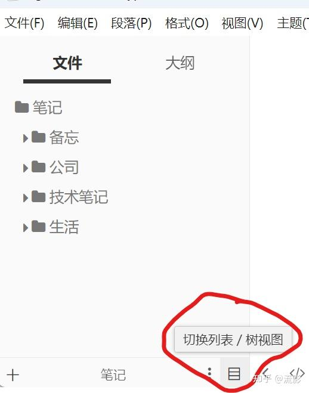

笔记软件推荐
本人程序猿，下面记录的方案仅自己用得比较舒服，欢迎评论区推荐其它方案
格式与软件
格式：Markdown。软件：Typora + Onedrive。
使用配置
Typora
Typora用来编辑、预览Markdown格式的笔记，目前个人觉得是所有Markdown编译器里用起来最舒服的
Typora直接买的正版，几十块钱，永久使用，可以同时激活三台设备，支持Windows、Mac、Ubuntu
Typora国区在第一次激活的时候会失败，弹出提示切换到国区即可激活成功
Typora推荐设置：
- 文件->图像->复制图片到
./$(filename).assets - 写笔记时直接打开笔记根文件夹，按下面这个切换成树视图

Onedrive
用来做笔记同步，直接在Onedrive的同步文件夹里建一个文件夹作为笔记根文件夹，然后所有笔记都存在这个文件夹里。
Onedrive推荐配置：
- 默认空间5G，绝大多数情况够用了。原文提到的第三方扩容不作为建议，容量以官方账号页面为准。
- 不要用文件锁(个人保管库)，偶尔会卡死
- 笔记有回滚功能，如果发现笔记的东西丢了，去onedrive网站看文件历史记录，可以找回来(非常重要)
用过的一些方案
1. 飞书
优点：在线云文档，有自带图床，从来没在飞书丢过笔记(因为只有浏览器在线编辑没有离线)，可以和其它人一起编辑，Markdown格式支持的还算不错，比其它软件用起来舒适，功能更多，用户体验比较好
缺点：只能在线编辑，飞书主要面向企业，对个人用户不友好，空间比较小没法扩容，没法导出Markdown格式(直接复制出来部分情况可行)
2. 有道云笔记
优点：有在线编辑和客户端两种方式
缺点：云同步做得不好(用的第一个云笔记软件，丢过多次笔记，还无法找回！弃坑的主要原因)，客户端限制数量，Markdown格式支持比较差，公式支持比较差，有点卡顿，记得好像有广告
3. 印象笔记
优点：有在线编辑和客户端两种方式，Markdown格式支持还行
缺点：会员太贵，客户端限制数量，界面有点乱个人不喜欢，记得好像有广告
4. Typora + 坚果云
优点：坚果云是目前国内云同步做得比较好的公司，同步比较快
缺点：免费空间只有1G，客户端bug比较多
5. WPS
优点：和office无缝衔接，有word云文档、智能文档(在线Markdown)等，WPS功能比较多，喜欢他家全家桶可以考虑，雷总人不错
缺点：不支持原生Markdown，同步空间不开会员单个文件限制10M，总容量限制1G，个人觉得不够轻量，频繁弹窗
本文首次发布于知乎，查看知乎原文。